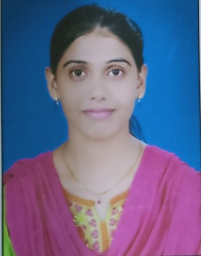
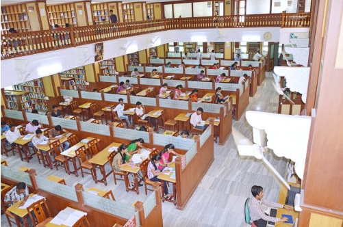

Associate Professor Processing, Machine Learning,Computer Vision & Pattern Recognition @ssgmce.ac.in
DR.S.B.PATIL
Professor & HOD VLSI and Embeded System hod_cse@ssgmce.ac.in, , sbpatil@ssgmce.ac.in
Mr.C.M.MANKAR
Assistant Professor Networking & Operating Systems cmmankar@ssgmce.ac.in ............................................
Mr.V.S.MAHALLE
Assistant Professor Information Security and Image Processing..... vsmahalle@ssgmce.ac.in
Ms.K.P.SABLE
Assistant Professor Data Structure Programming & Networking kpsable@ssgmce.ac.in...................................................
Ms.P.V.DESHMUKH
Assistant Professor Computer Organization, Assembly Language.. Programming & DSP
priyanka8deshmukh@gmail.com

Ms.T.M.UNTAWALE
Assistant Professor Data Mining tejaswiniuntawale4@gmail.com ..................................
Mr.V.D.REWASKAR
Assistant Professor Artificial Intelligence And Machine Learning.. vdrewaskar@gmail.com

CENTRAL LIBRARY
About Library
Welcome to the Central Library, which is one of the central support services of SSGMCE Shegaon. The mission of the Central Library is: To provide information services and access to bibliographic and full text digital and printed resources to support the scholarly and informational needs of the Institute Community.
The Central Library is well equipped with modern facilities and resources in the form of CD-ROMs, On-line databases, audio video cassettes, books, e-journals,IEEE journals,Research, CSI, CSRI, Encyclopedia patents, e-standards, theses, reports,periodicals, papers of National and Inter-National Authors CD's, CBT's, Audio/ Video Cassettes monographs etc which spreads fragrance of knowledge.
The library homepage will provide electronic access to various full text & bibliographical databases & e-journals. I also invite you to visit the library in order to enjoy the wealth of printed resources available on our shelves.Our Central Library is well equipped neat and clean interior decorated. Having more than 90061 number of Text and Reference books. More than 29,714 number of Titles. More than 372 (Technical Print Editions 71, online e-journals 275 and Non Technical Journals 26) number of Periodicals on various subjects including Online Periodicals. Also includes Educational/ Software /Entertainment CD's, Audio/ Video Cassettes, CBT's."
Library Working Hours:
Monday to Saturday : 8.00 a.m. to 8.00 Sunday and Holiday : 11.00 a.m. to 5.00 p.m.
 DR.S.B.PATIL
DR.S.B.PATIL  Mr.V.S.MAHALLE
Mr.V.S.MAHALLE  Ms.P.V.DESHMUKH
Ms.P.V.DESHMUKH Mr.V.D.REWASKAR
Mr.V.D.REWASKAR